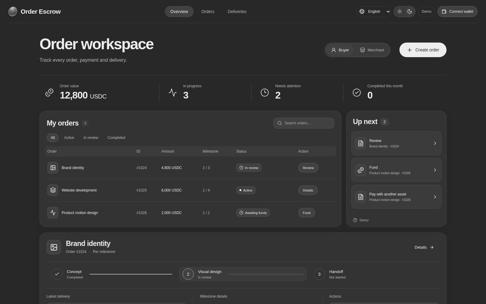

Order Escrow
A traceable path from agreement to settlement.
A milestone-based order system covering terms, funding, delivery, review, refunds and disputes, with workspaces for each participant.
Rust / Anchor / Solana / React / TypeScript

Orders span multiple milestones, assets and exception paths. Participants need to agree on the same terms while money movements stay aligned with business state.
A two-person collaboration across order rules, contracts and application integration. This case presents shared work, not sole authorship of the entire codebase.
Full implementation scope
Terms & orders
Drafts, versioned terms and commitments, merchant acceptance, full or milestone funding.
Delivery & review
Delivery commitments, private evidence, review windows, bounded revisions and approval.
Refunds & disputes
Refund requests, responses, escalation, primary and backup arbitration, and settlement agreements.
Assets & settlement
SPL, plain Token-2022 and TransferFee; per-asset settlement, fees and principal reconciliation.
Swap funding & closure
Minimum-received and expiry constraints, residual balances, rent ownership and account cleanup.
Application & engineering
Role-based workspaces, wallet integration, archives, release checks and local-chain regression.
Verification record
Recorded results, with contextLocal chain
Recorded checks cover permissions, funds, refunds, disputes and failure rollback.
Devnet
One normal order completed its real-wallet lifecycle through Hyperion, with closure and reconciliation.
Demonstration
The original interface recording is available. This recording does not execute real on-chain transfers.
Current boundaries
Full public-network refund and dispute acceptance remains in the fixed closeout scope. Live Jupiter liquidity, mainnet operation and independent audit are not claimed complete.
Materials reviewed: 16 November 2026 / Verification checkpoint: 2026-10-30
A recorded
walkthrough.
An original recording of the project interface and workflow. The recording environment is described separately from the current verification status.
Have something
in mind?
sa121812138@gmail.comA brief outline, your current stage, and a timeline
are a good place to start.